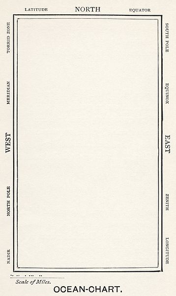

|

|
He had bought a large map representing the sea,
Without the least vestige of land:
And the crew were much pleased when the found it to be
A map they could all understand.
"What's the good of Mercator's North Poles and Equators,
Tropics, Zones, and Meridian Lines?"
So the Bellman would cry: and the crew would reply,
"They are merely conventional signs!
"Other maps are such shapes, with their islands and capes!
But we've got our brave Captain to thank"
(So the crew would protest) "that he's bought us the best-
A perfect and absolute blank!"
The Hunting of the Snark by Lewis Carroll
|